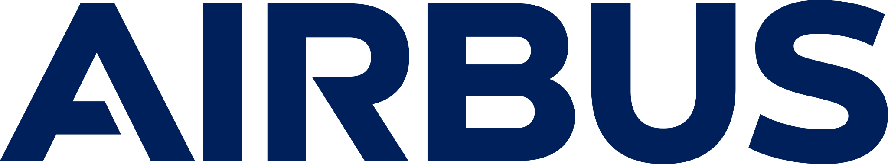
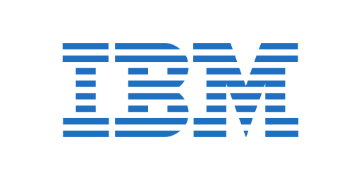
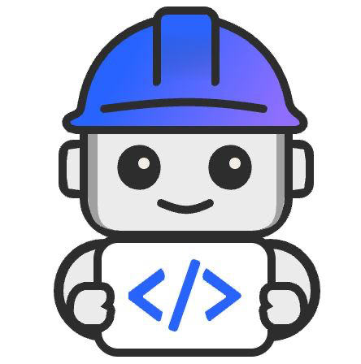
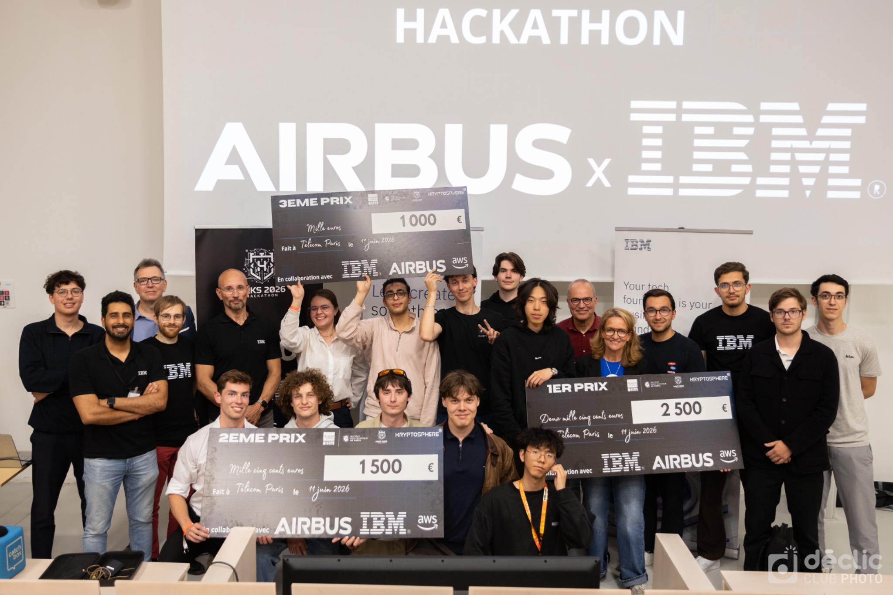
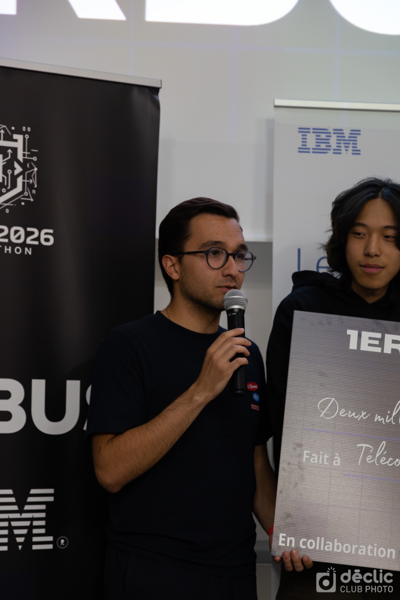
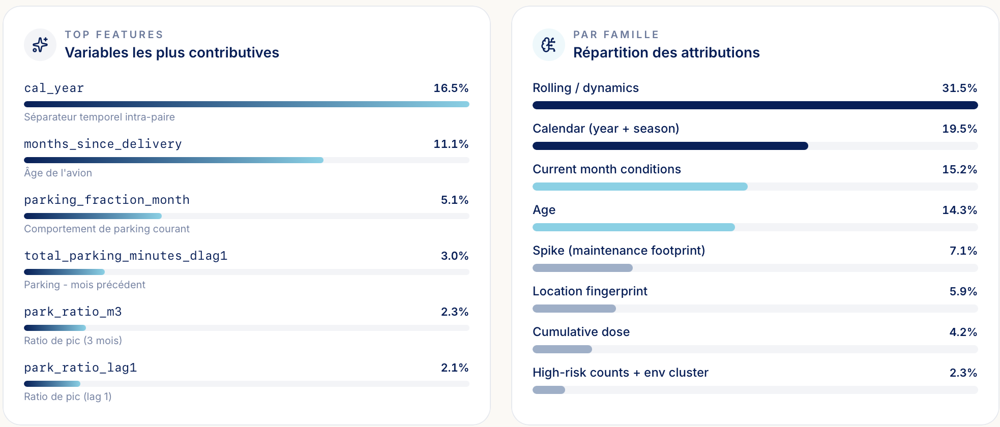
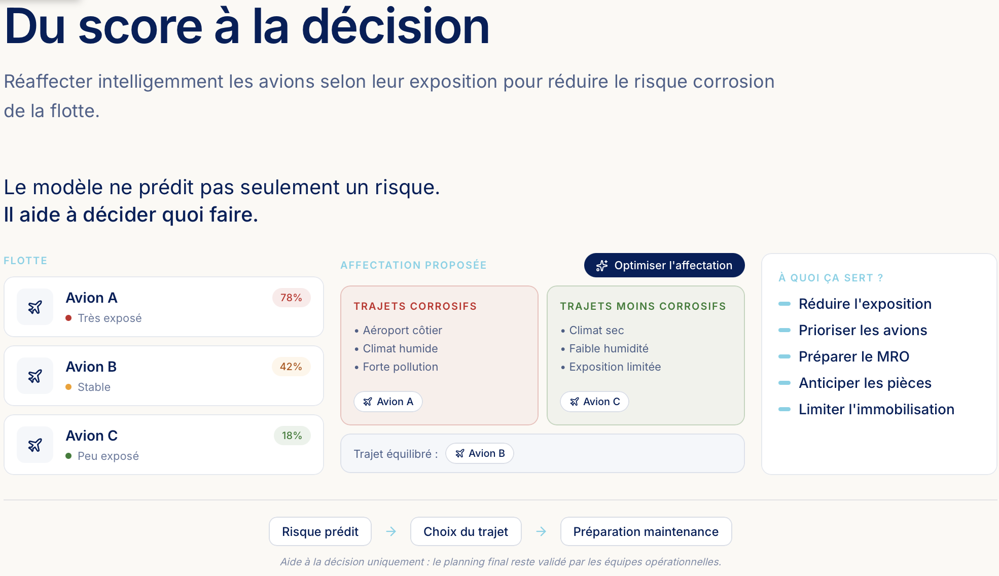

ContexteContext
Le sujet porte sur la prédiction du risque de corrosion à la date d’un C-check. L’enjeu n’était pas seulement de produire un score, mais d’aider les équipes MRO à prioriser les inspections, les ressources structure et les actions de traitement au bon moment.
The challenge focused on predicting corrosion risk at the date of a C-check. The goal was not only to output a score, but to help MRO teams prioritize inspections, structural resources and remediation actions at the right time.
Ce que j’ai faitWhat I did
- Contribution au feature engineering à partir de plusieurs sources : âge avion, historique corrosion, exposition aéroportuaire et ratio sol/vol.
- Structuration de variables agrégées par avion pour mieux représenter l’exposition cumulée avant inspection.
- Comparaison de modèles et contribution à une approche combinant FT-Transformer et XGBoost.
- Travail sur la calibration, la validation GroupKFold anti-fuite et l’interprétation probabiliste du risque.
- Utilisation de Bob, l’outil prescrit pour le hackathon, pour la démonstration et la restitution finale orientée MRO.
- Contributed to feature engineering from multiple sources: aircraft age, corrosion history, airport exposure and ground-to-flight ratio.
- Built aircraft-level aggregated variables to better capture cumulative exposure before inspection.
- Compared models and contributed to an approach combining FT-Transformer and XGBoost.
- Worked on calibration, leakage-aware GroupKFold validation and probabilistic risk interpretation.
- Used Bob, the prescribed tool for the hackathon, for the demo and the final MRO-oriented presentation.
PipelinePipeline
Journaux corrosion et maintenance, environnement des aéroports, dates de C-check, construction de variables d’exposition, entraînement et comparaison des modèles, calibration, validation GroupKFold et traduction du score en recommandation de maintenance.
Corrosion and maintenance logs, airport environment data, C-check dates, exposure feature engineering, model training and comparison, calibration, GroupKFold validation, then translation of the score into a maintenance recommendation.
RésultatsResults
Le modèle final a été évalué avec un Brier Score de 0.150. Après une présentation devant le jury, l’équipe est arrivée en tête de la partie technique parmi 8 équipes ayant pitché, puis a conservé la première place au classement final. Le feature engineering et l’explicabilité ont surtout permis de rendre la décision plus exploitable : lecture par avion, comparaison à la flotte et mise en contexte du risque au moment du C-check.
The final model was evaluated with a Brier Score of 0.150. After presenting to the jury, the team ranked first on the technical part among 8 pitching teams, then kept first place in the final ranking. Feature engineering and explainability were especially valuable to make the output actionable: aircraft-level reading, fleet comparison and contextualization of the risk at C-check time.
Prix et présentationAward and presentation
Le projet a été présenté devant un jury après le travail technique. L’équipe a terminé en tête de l’évaluation technique parmi 8 équipes ayant pitché, puis a conservé la première place à l’issue du classement final.
The project was presented to a jury after the technical work. The team ranked first in the technical evaluation among 8 pitching teams, then kept first place in the final ranking.


Explicabilité et décisionExplainability and decision

